Friday, 6:30 AM
This motorcycle trip began, oddly enough, in a rental car. At 6:30 on Friday morning I picked up a Chevy Trax at RDU. The mission was simple in theory and slightly ridiculous in practice: drive to Kevin’s house in Durham, then the two of us would leapfrog to Alpharetta, Georgia, trading time between the Trax and his 2023 BMW R18 Transcontinental. Once there, return the rental, pick up his nearly new 2025 Honda Gold Wing Tour DCT, and take the next day and a half to ride both bikes back home via the twisty roads of the north Georgia mountains and I-85.
It was part logistics exercise, part road trip, part comparison test, and part excuse to spend two days talking through Cardos about motorcycles, cars, books, sci-fi, and whatever other subjects two riding buddies can grind into powder over 860 miles.
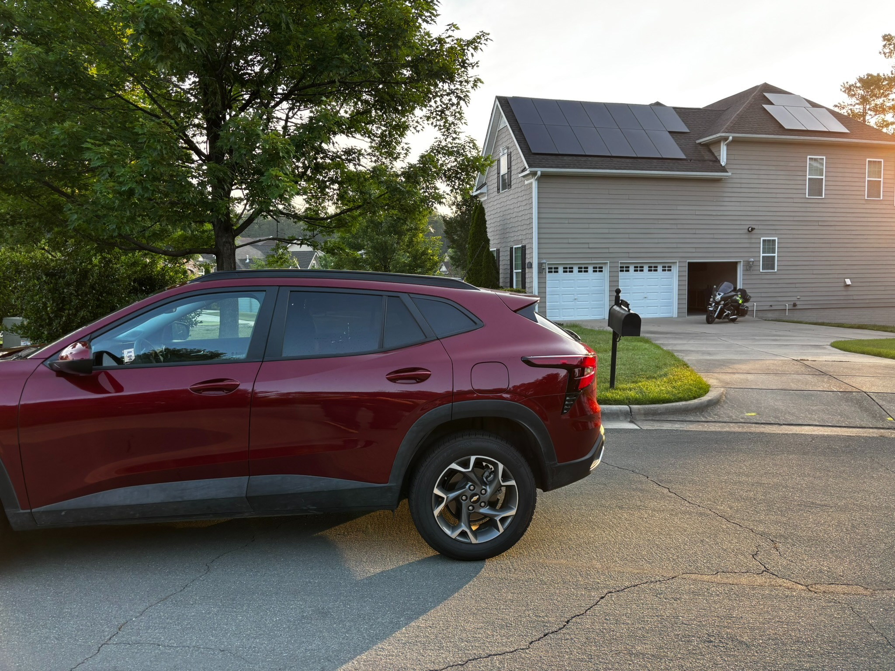
We were both ripping to get started. At 7:08 AM we rolled out. One motorcycle. One rental car. Two riders. By the end of the day there would be two motorcycles and a much harder question than either of us expected: If you had to choose between one of the most refined touring motorcycles ever built and one of the most charismatic cruisers on the road, which one would you ride?
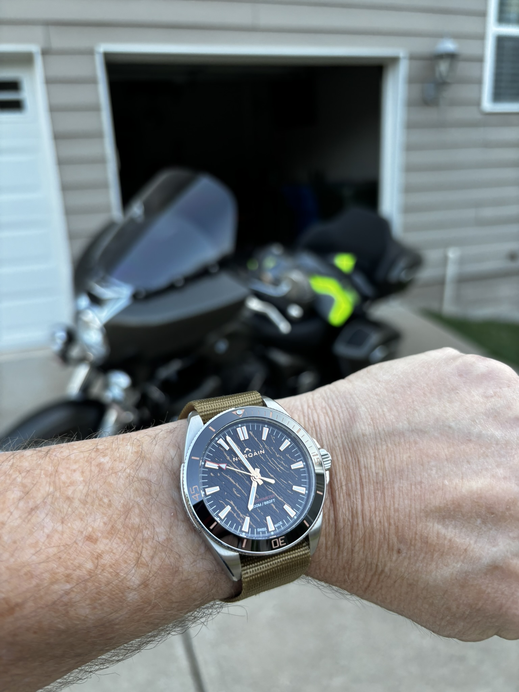
The Relay
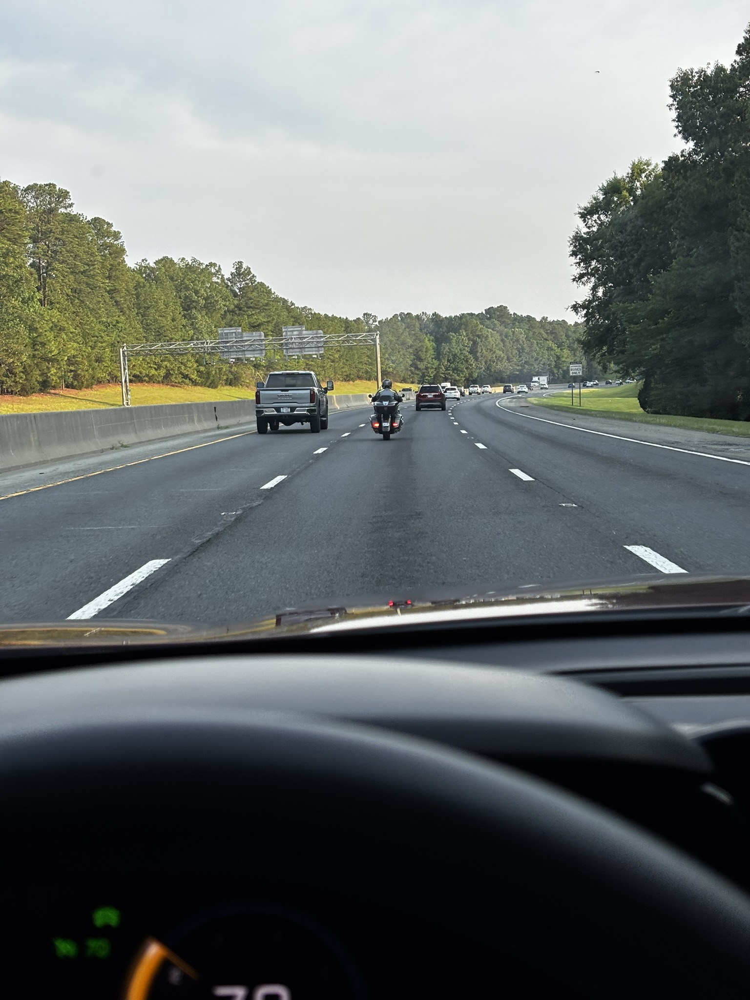
A long interstate day is usually a slow drain of wind noise, heat, vibration, traffic, concentration, and the reality that everyone around you is half-watching a phone. The relay changed the rhythm. Sixty to ninety minutes on the bike, then switch to the air-conditioned Trax. Swap again. The rider got a break without stopping the trip. The driver rested without missing the conversation. It was almost unfair.
We were fresh in a way we usually are not. The R18 got exercised. The Trax did its shuttle duty. Cardo kept us talking via simple phone call.
Then Charlotte appeared, as Charlotte does, with traffic, concrete, and weather assembled specifically to test our timeline.
The Rain Shift
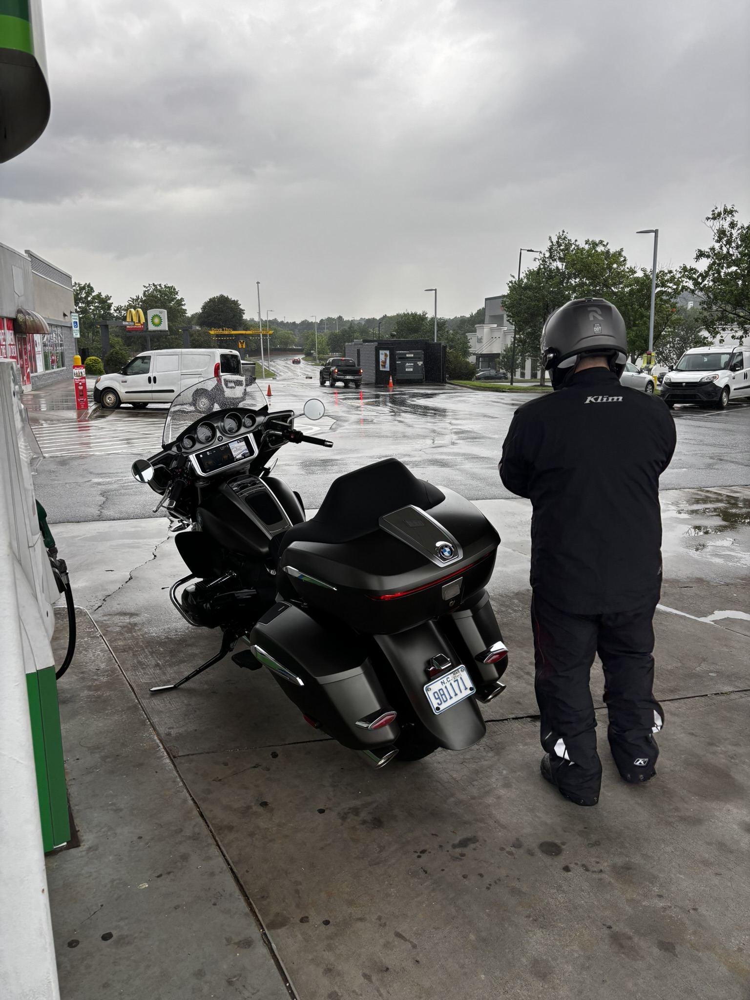
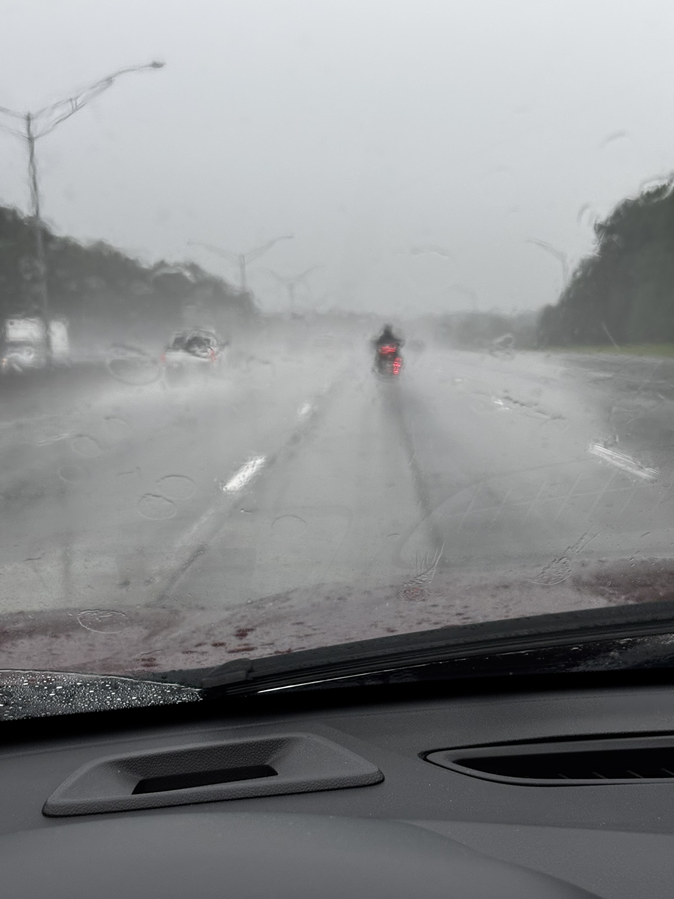
As we approached Charlotte the sky darkened enough that continuing without rain gear would have been negligent. It was my turn to ride, but Kevin took one look at the weather and said he would take the rain shift. It was his motorcycle after all. He geared up, we refueled and hit the road.
From the Trax I watched the BMW ahead, its broad rear end and red lights punching through the spray. The car gave me a privileged view of a situation that is usually all helmet noise and clenched focus. Kevin handled it perfectly: smooth lines, good spacing, no drama.
By the time we crossed into South Carolina the rain had eased. Kevin was drying. The bike had shrugged it off. We switched again and carried on. There is a peculiar satisfaction in surviving the first weather test of a trip. It does not make you invincible, but it takes the edge off. The gear works. The bike works. The plan works. Keep moving.
The Altima
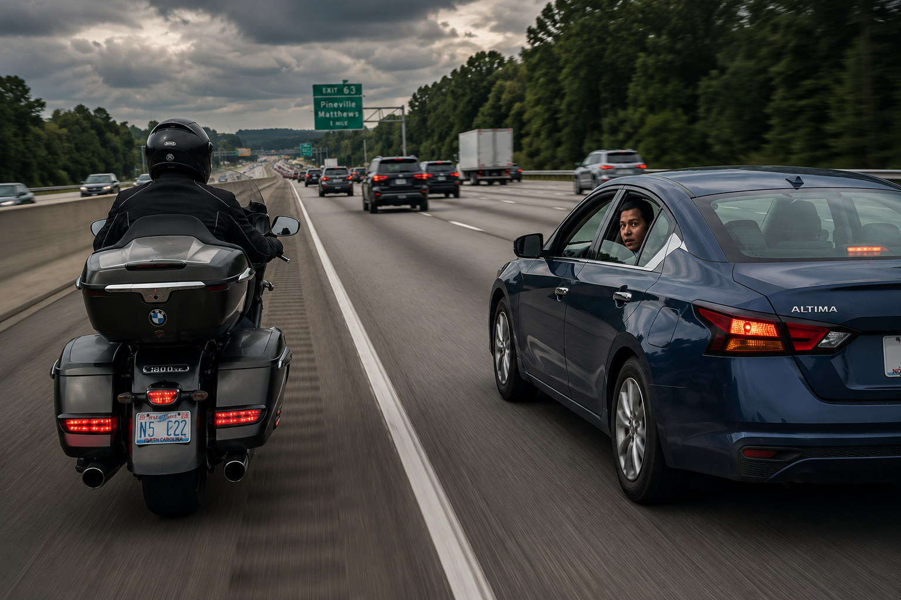
Every motorcycle trip has one moment that reminds you of your mortality. Mine arrived courtesy of a blue Nissan Altima. Somewhere south of Charlotte, while it was my turn on the BMW, the driver decided my lane was his lane. No signal, no warning. I went left over the rumble strip onto the emergency shoulder, concrete barriers close enough to focus the mind. Luckily, the shoulder was clear. The BMW stayed composed. I rolled on the throttle, passed him, and slipped back onto the highway.
The driver looked over with genuine surprise, as if I’d materialized from a different dimension. I guess, for him, I had.
Somewhere in South Carolina
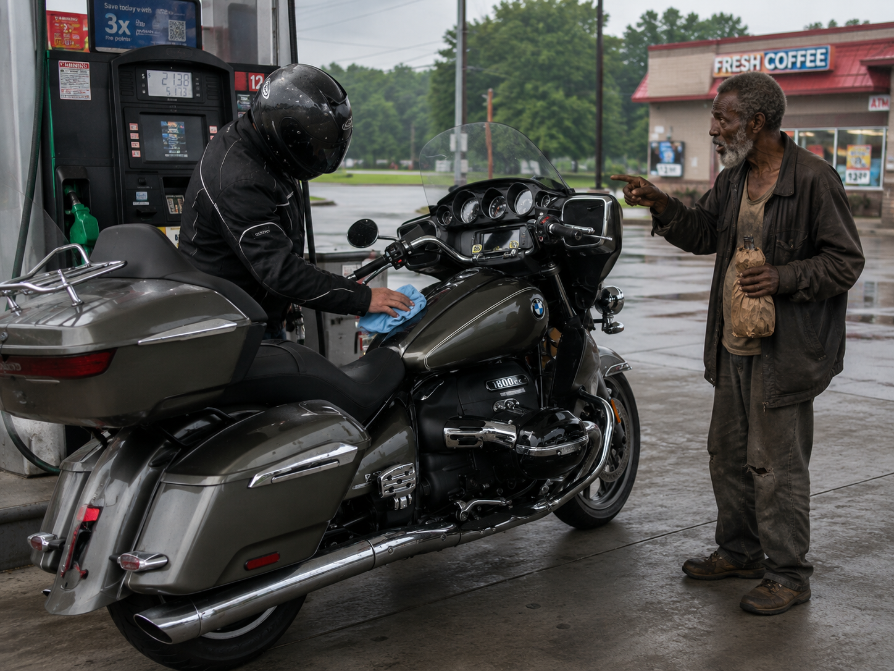
Lunch was not glamorous, which is often how motorcycle lunches work. Near Clemson we stopped at a Subway, ate quickly, talked timing, and kept moving. Alpharetta was still the objective. The Gold Wing was waiting. Everything before that was logistics.
At the next fuel stop the pump’s auto shutoff failed and gasoline splashed across the R18’s tank. Kevin went into damage-control mode, rinsing and wiping while trying not to imagine what gasoline might do to that German matte finish. An older man wandered over offering cleaning tips. If he’d not been drunk, he might have been helpful. The BMW survived. We went back to the relay.
Alpharetta
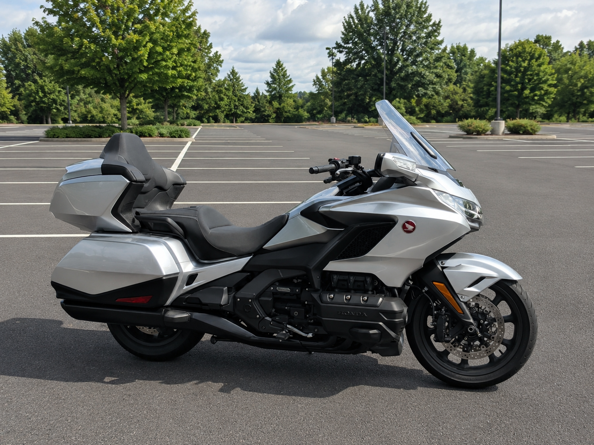
We made Alpharetta with the efficient focus that comes from wanting the boring part over. Returning the rental was easy. Getting the Gold Wing ready took longer, not because it was difficult, but because two mechanically curious people cannot simply climb on and leave. Tire pressures, CarPlay, luggage, buttons, DCT operation.
The plan was for my gear to go with the Honda, and Kevin’s with the BMW. The BMW’s side cases were great, but the top trunk immediately felt like a feature you do not fully appreciate until living out of it. Get off. Step to the rear. Open the trunk. Hat, water bottle, snack, battery bank, charge the Cardo, stow gloves, grab sunglasses. Done. A small reset station at every stop. Kevin already knew this from the R18, but it was new for me. I remember thinking this alone might be reason enough to move to this type of bike someday.
First Ride
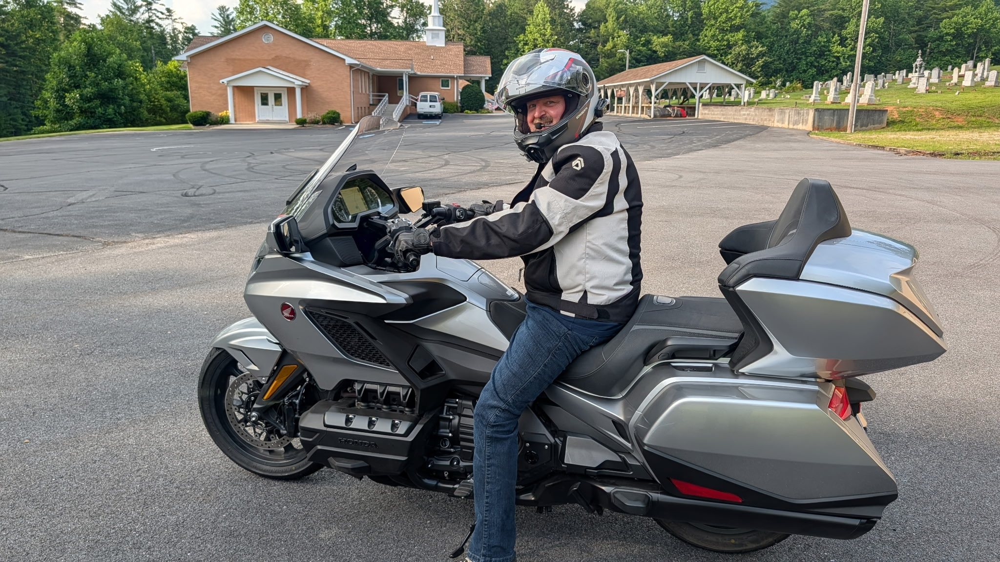
By the time we got away from Alpharetta the trip had changed shape. The relay was done, and the real ride started when Kevin pulled away on his new Gold Wing. I followed on the R18, the two of us finally in our familiar riding configuration. He took the first shift on the Honda, as was proper. There are moments that belong to the owner first.
I followed on the BMW, listening through the Cardo while he tried to describe what was happening. Smooth. Weird. Effortless. Shifts invisible. Ugh, reached for the clutch. Perfect balance. So smooth. He was excited and processing in real time. The Wing glided through traffic with almost no drama. I could hear his commentary, but without being on the bike, it was hard to really understand. On the BMW I could hear and feel everything: the boxer pushing, rocking, grumbling. The Honda slipped through the world with the volume turned down.
Eventually we made our first proper switch. I stepped off the R18 and onto the Gold Wing. I still remember the first few feet. No clutch. No shifter. No familiar left-hand ritual. Just brake, Drive, throttle. The bike eased away like it had been waiting for me to stop overthinking it.
Kevin had not been exaggerating. The shifts were almost undetectable. Power whenever I asked for it, but not much ceremony. No surge, no lurch. Just motion.
That was the beginning of the weekend’s experiment. We switched again and again, every hour or so. That became the whole story. Every switch reminded us what we had missed.
The Road to Franklin
The ride from Alpharetta to Franklin was good, though not immediately great. It took time to escape Atlanta’s orbit. Eventually the landscape loosened. Roads narrowed. Traffic thinned. Curves arrived in groups.
The surprise with the Honda was not that it handled well. The surprise was how little effort it took. DCT picked the right gear almost every time with no drama. The engine is smooth and plentiful. In Sport mode it moves. But it felt very different than the R18. The cockpit is wide and polished, but it feels like you’re on it rather than in it. The fairing shields you. Engine and transmission disappear. Much of the work disappears. Astonishing, but it creates a question: when a motorcycle removes enough effort, does it also remove some of the motorcycle?
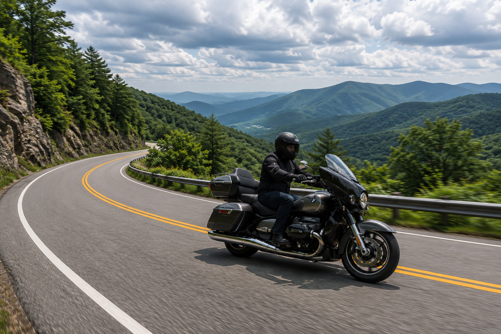
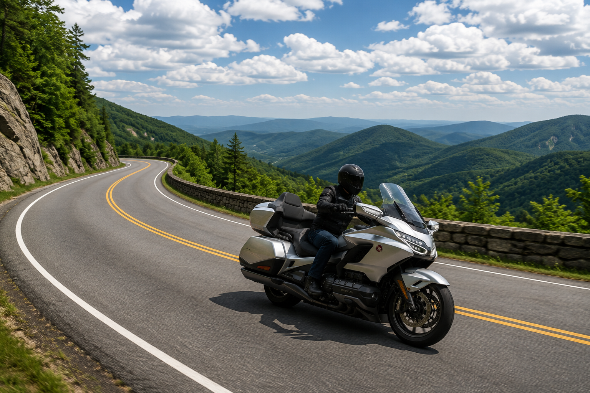
On the BMW there was never any danger of forgetting what you were doing. Raw, noisy, clunky, heavy in ways that make it feel like a machine. Exhaust pops and gurgles. Rolling on the throttle mid-corner had texture. Drivetrain personality. If you were in the wrong gear, you solved it yourself. That is not always a flaw.
Both bikes were excellent in the same corners for completely different reasons. The Wing is composed and accurate. The R18 is involving, unafraid, and physical. One felt like a system. The other felt like an event.
The Carolina Motel
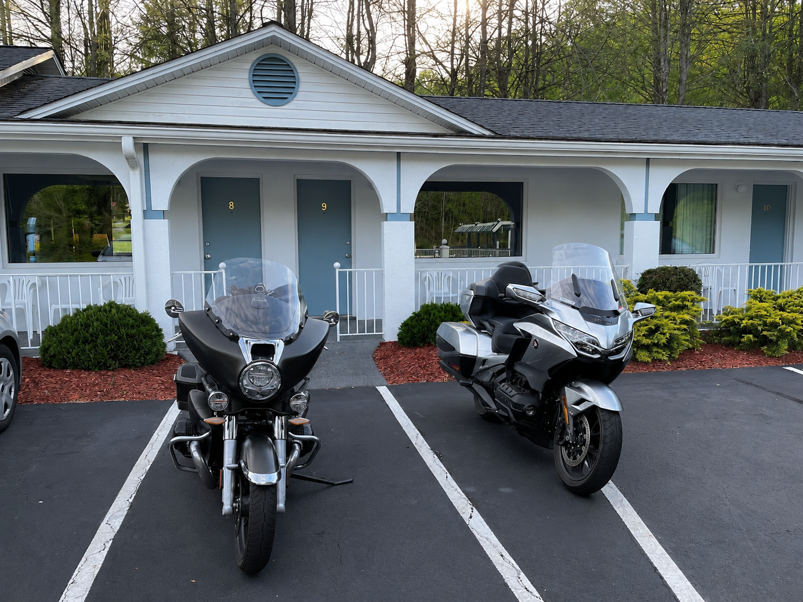
We rolled into Franklin at 7:15 Friday evening, almost exactly twelve hours after leaving Kevin’s that morning.
Our stop was the Carolina Motel. It’s not fancy, which was part of its charm. For about a hundred bucks we got what actually matters: clean room, bikes parked directly outside the door, pool, stone fire pit, Adirondack chairs, and enough firewood to outlast a double corona. Franklin had good energy: rodeo signs everywhere, motorcycles scattered around town, and a warm day cooling into mountain evening.
Before dinner another rider gave us the first story of the night. His Harley was scraped up. He was scraped up. He had ridden the Tail of the Dragon and hit a bear. Not swerved around. Hit. Certain sentences stop all other conversations. He was matter-of-fact. We told him we were glad he wasn’t hurt worse. Only at a motorcycle motel does a story like that become the appetizer.
Lazy Hiker
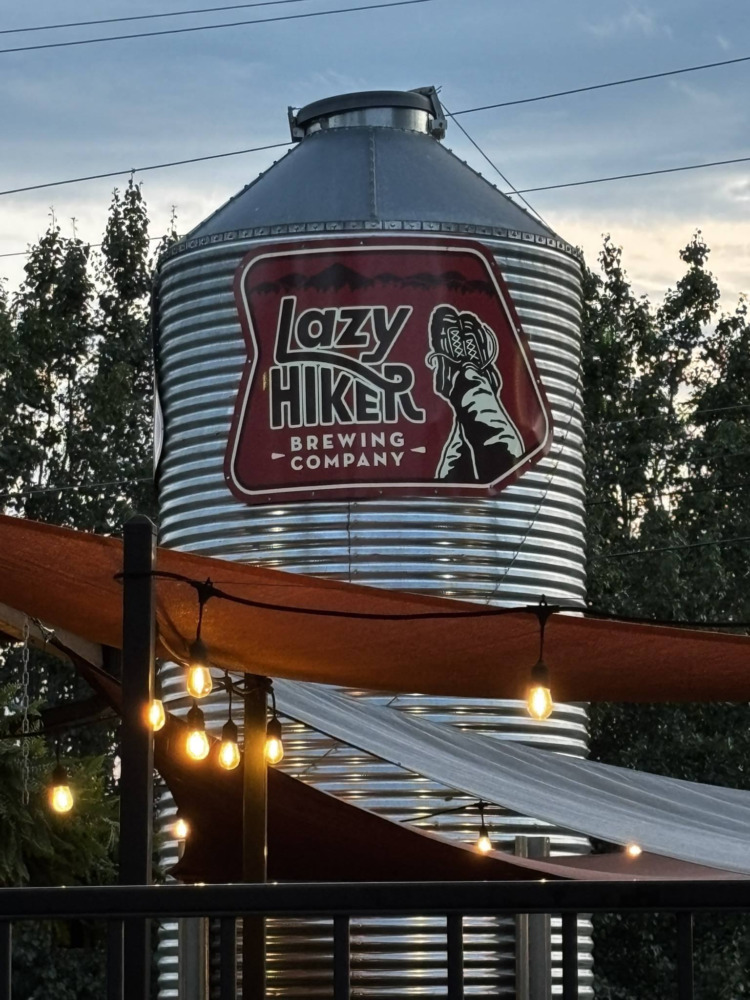
Quick showers and a change of clothes, then three miles into town to Lazy Hiker Brewing. Café lights and busy patio beckoned. Excellent beers and excellent burgers from the food truck. But the bikes were the story.
Finally relaxed and with food, we started trying to explain what we had experienced. The Gold Wing was amazing: so smooth, did everything well, shifted better than I could, comfortable, fast, composed, shockingly balanced. Felt lighter than my GS. The BMW was gorgeous in a way strangers understood immediately. Over the weekend four or five people stopped to compliment it. Eyes always went to the R18 parked next to the Wing. Long pipes, big bags, round headlight, massive cylinders. It has presence. The Gold Wing has mastery. The R18 has magnetism.
Ghost Clutches and Parking Brakes
The DCT dominated early conversation. My left hand was not prepared for retirement. Ghost clutch grabs happened constantly. The first few times were funny, but by the tenth time it’s more revealing. The clutch is part of the language, but the Honda spoke a different dialect.
It required a different parking ritual: Neutral and the parking brake, then reverse that when leaving. The strangest discovery was downhill coasting. I apparently like to pull in the clutch and coast more often than I realized. The Gold Wing revealed the habit by removing it. In miniature, that is the whole DCT debate. It removes work. It removes certain forms of participation. Wonderful in traffic and interstate. On more interesting roads, it depends on what you want from the ride.
Fire Pit Theology
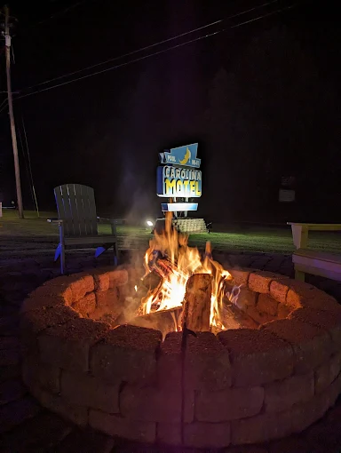
Back at the motel we found the fire pit. Cigars and bourbon appeared. The bikes sat cooling a few yards away like two completely different answers to the same question. There is something about a motel fire pit that improves motorcycle conversation.
Honda engineered out vibration, harshness, shifting drama, wind noise, and much of the physical effort: an extraordinary achievement. But when enough effort disappears, some of the emotional texture goes with it.
The BMW goes the other way. It asks more from you. It reminds you of its weight. It makes fantastic noise, popping and gurgling like a sports car. The transmission thunks through the gears. It requires muscle off the sidestand. Yet every time I climbed back onto it, I smiled. That is not rational. Motorcycles occupy the part of the brain that makes people buy mechanical watches. The R18 is that little machine, except it weighs almost half a ton and has a boxer engine the size of a coffee table.
The Rodeo Rider
Our cigars halfway done, a tall, lanky, tattooed man limped over and lowered himself into an Adirondack chair and lit up a cigarette. He was a bronc rider, in town for the rodeo; he’d been riding an hour before. For the next half hour we learned about bulls, broncs, injuries, and a life that makes motorcycle touring seem conservative.
“I told her not to ask me to choose between her and the rodeo, because I’ll choose the rodeo every time.” Nothing performative. When he stood, you could hear the pine tar on his pants peeling away from the chair. He hobbled back like a man who had spent too many nights arguing with bulls and gravity. You cannot make that up.
A man who hit a bear. A bronc rider choosing the rodeo. Two giant touring motorcycles. Cigars, bourbon, mountain air. Friday had become a motorcycle trip in full: not because everything went perfectly, but because it had already started collecting stories.
The Best Hundred Miles
Saturday morning arrived with the particular kind of quiet that only happens at a motel after a long riding day. Opening the door, I found everything slightly damp. A quick wipe down of the seats and windshields, some cheap hotel coffee, and we were ready to roll. The plan: US 64 east toward Highlands, continue toward Brevard, south to Cleveland SC, then point the bikes home on the interstate. The next hundred miles would become the best riding of the trip.
Kevin took the first shift on the Gold Wing. I climbed onto the R18. The big boxer woke with a mechanical shake and announced itself in a way the Gold Wing never did.
US 64 out of Franklin does not waste time getting interesting. It begins climbing and curling almost immediately, following the Cullasaja River through rock, trees, water, and pavement. It is the sort of road that explains why people build motorcycles.
This is the image that sticks with me: my point of view from the R18, big fairing ahead, fresh black pavement curling through green canopy. Still leaning left coming out of a long sweeper, Kevin ahead on the Gold Wing tipping right into the next curve. No cars. No noise except engines. Just two giant motorcycles doing the thing they were built to do.
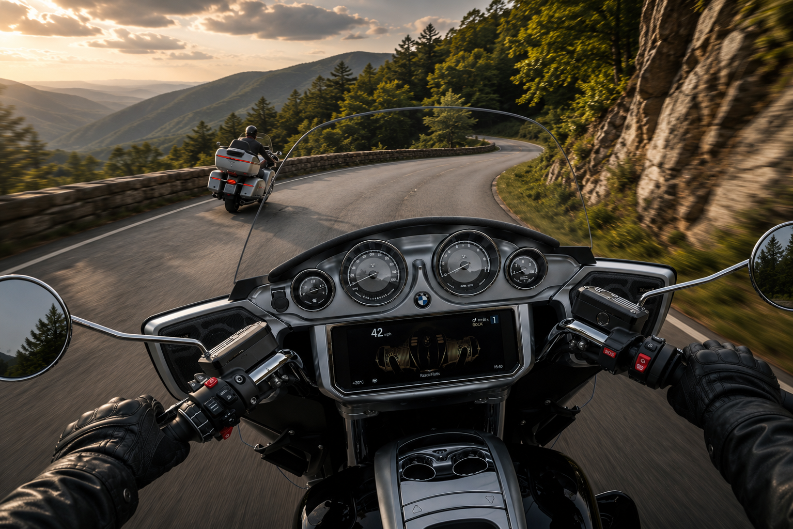
The R18 was unexpectedly wonderful here. It’s long and heavy with cylinders like industrial sculpture. But once moving, with all that low-slung weight, it sweeps corner to corner with confidence that made us laugh. Boxer torque is always there. Roll on mid-corner and the machine answered with low mechanical surge. Exhaust first thundering then popping and gurgling. The Honda was fast, smooth, and effortless. The BMW made every corner feel like an event. There was satisfaction in that. There was a conversation happening.
The Honda was flawless. Despite what feels like a slow lean-in, it carved the mountain roads with shocking confidence. All the philosophical thoughts about the DCT disappear as you brake, slow, lean, roll, and blast out of the curve and head to the next one. It’s perfectly planted, has power to spare, and goes exactly where you point it.
We had been switching every hour or so. The rhythm had become part of the trip. Stop. Laugh. Compare notes. Exchange keys. Remember what the last motorcycle had hidden from you.
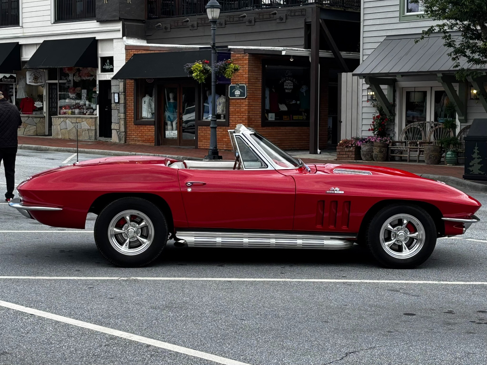
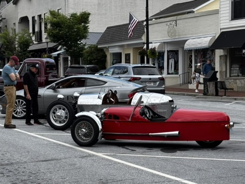
This switch happened in Highlands, where a downtown car show was assembling. Highlands deserved more time. Brevard too. Both are beautiful, walkable, and we added them to the return-with-wives list.
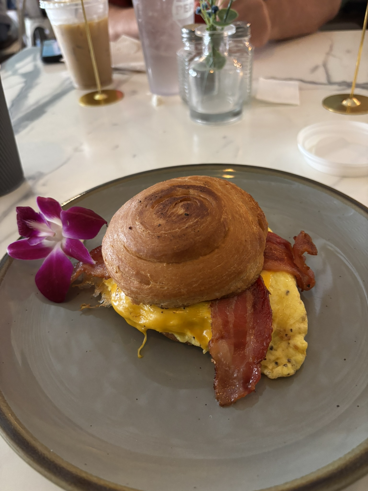
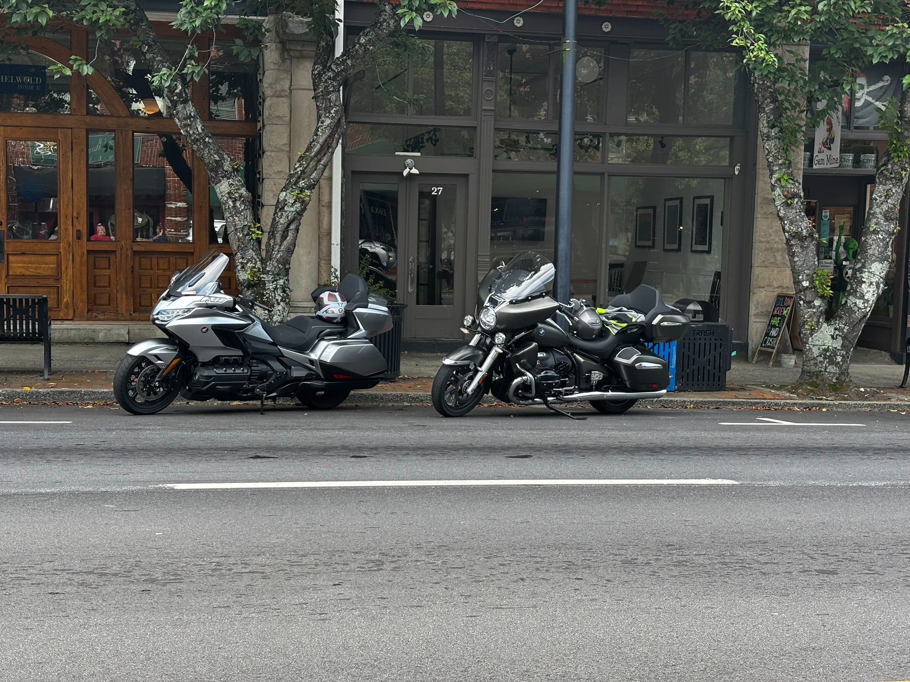
The DCT Problem
By Saturday morning I had enough time on the Gold Wing DCT to stop being merely impressed and start being annoyed by how good it was. Which is exactly the problem. The Honda removed work, but it also removed participation. My left hand kept reaching for a clutch that did not exist. I’d forget the parking brake ritual. Yet once moving the system was close to flawless. Sport mode sharpened it and held the gears longer. Power delivery was smooth and plentiful. I don’t think I ever found it in the wrong gear.
The Standing Question
Coming from ADV bikes I am accustomed to standing on the pegs to stretch and reset. The R18 allowed it reasonably. The Gold Wing geometry put too much pressure through the arms. Thirty seconds was about enough. The Honda was designed to make sitting as comfortable as possible, and it succeeded. The BMW allowed more human weirdness: stand up, shift wrong, scrape a peg, be imperfect.
Electronics and Heat
Both bikes reminded us modern travel is never just about motorcycles. Phones overheated while stored and plugged in on both. Honda’s CarPlay worked reliably once connected. BMW screen is larger and brighter but phone connection and navigation are plagued by frustrating disconnects and weird UI. The R18 won the cruise control comparison by a mile. Adaptive radar cruise is a game changer. Come on, Honda.
Cleveland
The stretch from Brevard toward Cleveland gave us more of what we hoped for: curves, canopy, water, views. But some rough road surfaces hindered our pace on the big tourers. By the time we reached Cleveland for fuel the morning’s perfect mountain rhythm had done its work. We had ridden the best hundred miles and learned more about both bikes than any dealership demo could teach. Still comparing notes. Still switching. We did not yet know the last real switch had already happened.
The Last Switch
At the fuel stop in Cleveland the trip still felt normal. We had just come off the best roads of the weekend. Three miles down the road Kevin came over the Cardo: “Uhh, wait up. I’ve got a problem. I think we need to stop.” BMW warning: Key fob not detected.
Keyless convenience had turned into a trap. On keyless motorcycles, you keep the key in your pocket and the bike starts up. But ride away without it and it will no longer crank. We’d been exchanging keys at each switch, but now the BMW key was missing. We turned around and returned to the gas station. Kevin kept the R18 running while I searched. Nothing, nowhere. It was gone.
Kevin made the right call: he would ride the R18 the rest of the way home. I stayed on the Gold Wing. The final 250 miles became a very different kind of test. We could not stall or switch off the BMW, lest we turn it into an expensive piece of German yard art.
One Bike Each
There was something almost poetic about it. For a day and a half we had been comparing by constantly escaping them. The lost key removed that escape hatch. From Cleveland to Durham the motorcycles had to be lived with. No more sampling. Kevin managing the R18 without ever shutting it off. I living on the Gold Wing for the long, hot, boring part where it is supposed to earn its reputation. In hindsight the key fob disappearance accidentally gave us the best possible long-distance test.
The Gold Wing Settles In
The Gold Wing settled into the interstate the way a good luxury car does. It did not ask for much. It did not vibrate, the DCT chose gears smoothly, the big windshield, if anything, blocked too much air in the hot sun. The seat was the most comfortable I’ve ridden on. In the one “oh crap, we gotta stop fast” moment, it didn’t dive or falter. It just stopped quickly. Sometimes I thought the ride was too easy.
Heat Management
The afternoon heat was brutal. Ninety-seven degrees is a punishment with lane markings. The Gold Wing was better than anything else I have ridden for that kind of distance in that kind of heat. It was not perfect. I wanted more airflow to my legs, the windshield a bit lower, another foot position. The seat got warm over time. Noticeable but not enough to change the conclusion. I wish the windshield would drop another inch, but this is a magnificent long-distance machine. And I’d appreciate more airflow.
The BMW Carries On
Kevin on the R18 was living a different, but also comfortable afternoon. The bike was perfectly capable: real touring motorcycle with great seat, adjustable airflow, excellent adaptive cruise, and a boxer that will pull all day. But it never lets you forget what it is.
The Bojangles Shade Stop
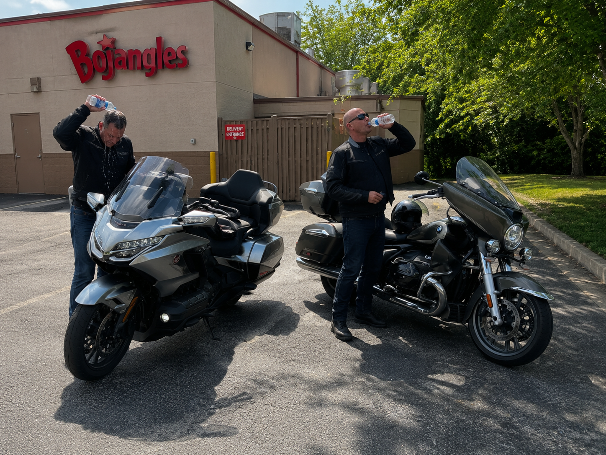
Somewhere around Concord the heat forced a stop. We pulled into the shade behind a Bojangles. “Neutral first, then kickstand down, do not switch it off.” That had become the operating rule. Honda could be turned off normally. BMW was a campfire we had to keep alive. We drank water, poured it over our heads. Conversation was short and practical, as we were now just on a mission.
As we left the shade and pulled away from a stoplight I looked back to see Kevin and the R18 still at the light. Had he stalled? No, but he had tried to start from 3rd gear and had a close call. Whew.
The Delta
The last hour became a math problem. We were close on fuel, and did not want to risk stopping and trying to refuel without shutting down the big boxer.
Kevin was giving updates on the gap between miles to home and miles to empty. We called it the delta. It narrowed. 20, then 15, back up to 17, then drifted down into single digits. We rolled into Kevin’s driveway with seven miles of range showing on the BMW. Close enough to make the ending funny because it worked.
The R18 was finally shut down. We were hot, tired, thirsty, and done. But we were home. The last 250 miles had clarified the bikes in a way the perfect mountain roads never could have.
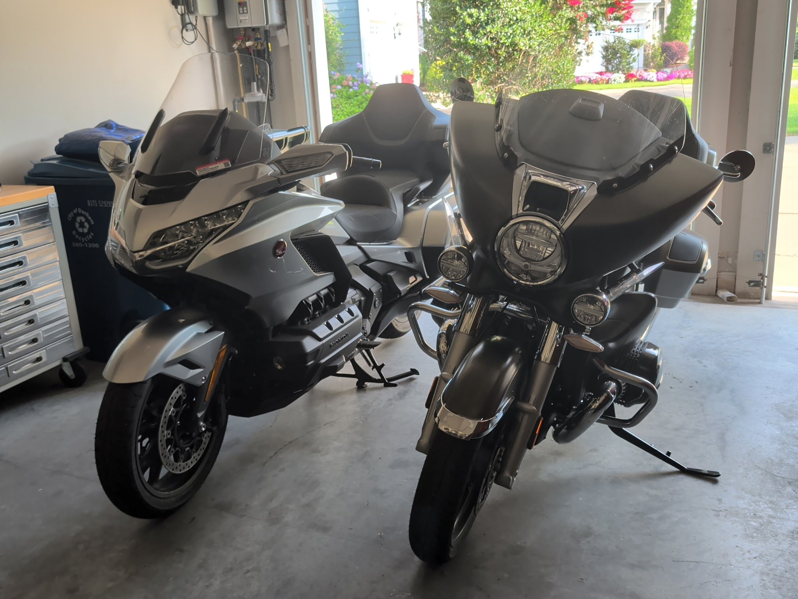
What the Long Ride Proved
The first hundred miles of Saturday proved that both motorcycles could dance. The last 250 proved which one could disappear. That is the Gold Wing’s greatest trick: the combination of everything creating a motorcycle that gradually removes itself from the list of things you have to think about. At some point I stopped evaluating the Honda and simply rode it. That is a compliment. It is also the source of my hesitation.
The R18 never disappeared. It was always there: in the bars, the clutch, the shifter, the boxer pulse, the pops and gurgles, the effort to stand it upright, the way strangers complimented it. The BMW asked more from the rider. The Honda gave more back to the traveler.
After the key disappeared we no longer got to choose which feeling we wanted every hour. The experiment became real. If we were leaving the next morning for a multi-day trip, both of us knew the answer. We would probably take the Gold Wing. But after parking it, we would both look back at the R18.
The Verdict
860 Miles. Two Motorcycles. One Impossible Decision.
The Wrong Question
By the time we got home the question we had been asking all weekend had started to feel wrong. It was no longer about which motorcycle was better. It was about what kind of experience each gave you, and how quickly you missed that experience the moment you climbed onto the other one.
Every switch reset the test. Every switch reminded us what we loved. That back-and-forth became the experiment: an alternating current of admiration.
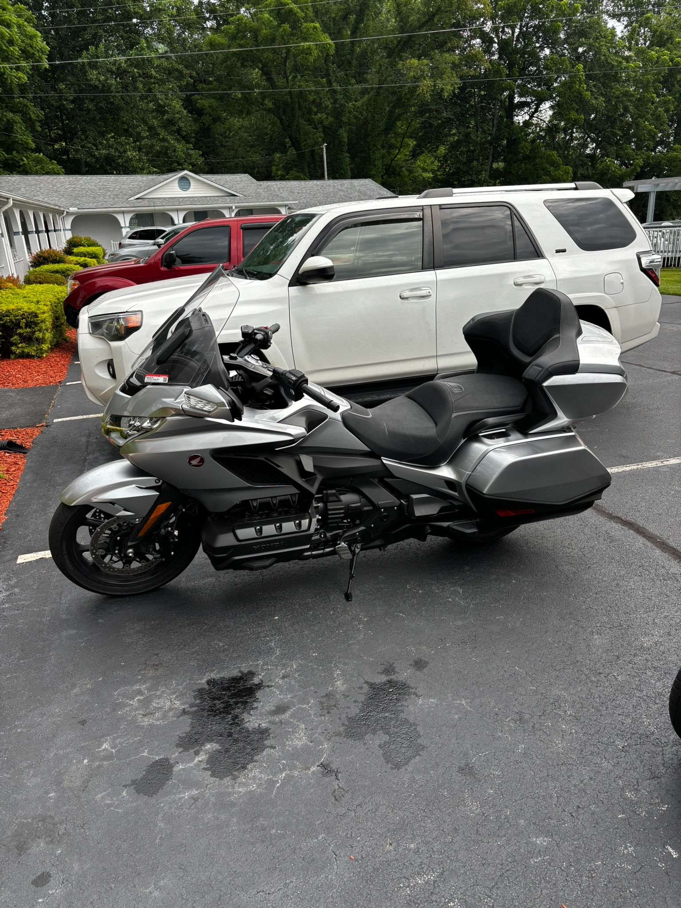
Honda Gold Wing Tour DCT
The Gold Wing is so good at its job that it risks making the job look easy. Smoothness. Flat-six providing thrust without theater. DCT shifting invisibly. Power arriving without suspense. Suspension working and planting you in the corners. And defying gravity by feeling lighter than my GS. It’s just an incredible motorcycle, but doesn’t always feel like a motorcycle.
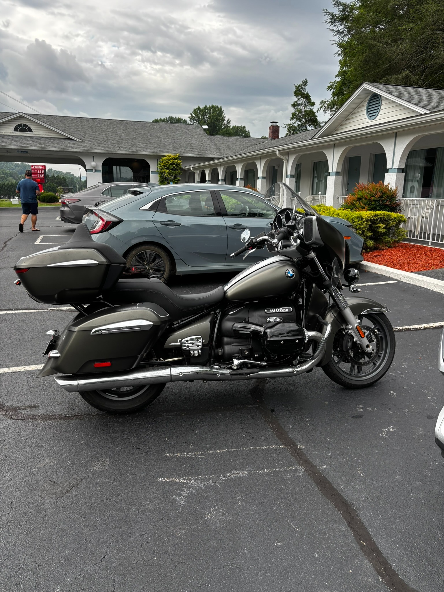
BMW R18 Transcontinental
The R18 is the opposite kind of achievement. It never disappears. Engine out in the wind, cylinders unavoidable. Exhaust pops and gurgles. Clutch and gear choice matter. Every time I got back on: AHHHH. This is what a motorcycle feels like. Raw, noisy, clunky, full of personality. It makes you participate. And when you park it, people notice.
But the BMW also has flaws. The infotainment is frustrating. The windshield should be adjustable, and don’t dare park it on a left leaning angle. But once rolling on flowing pavement it is far better than a bike this large and dramatic has any right to be. I scraped pegs and kept pace with the Gold Wing. It slings its weight through curves with surprising ease. It was always asking something of me, and I liked answering.
If the assignment is to cross states in supreme comfort, the Gold Wing Tour DCT is probably the motorcycle we'd rather own. If the assignment is to ride purely for the joy of riding, the BMW R18 Transcontinental keeps tugging at the heart. And of course, both bikes can handle both tasks incredibly well. Both BMW and Honda have engineered superb motorcycles that any long-distance rider would enjoy riding. The surprise is that neither bike diminishes the other. Riding them back-to-back only sharpened our appreciation for both.
The Switch
One impossible decision.
Maybe that was the point.